What you need
| You need | Why | Check |
|---|---|---|
| Node.js 22+ and pnpm | Both apps are Node apps | node -v, pnpm -v |
| Claude Code, logged in | Octoplan and the agents are Claude Code | claude opens without asking you to log in |
| git | Projects are git repos; the history feeds "harvest" | git --version |
| The octogent repo | Octoplan lives inside it (apps/octoplan) | git clone https://github.com/KreenoHub/octogent |
The octogent command | For the Run Octogent button | In the repo: pnpm install && pnpm build && npm install -g . |
GitHub CLI gh (optional) | Pull-request badges on tentacle cards | gh auth status |
Both apps only listen on 127.0.0.1. Nothing leaves your computer except what Claude Code itself sends.
Start both apps
Octoplan, from the octogent repo:
pnpm install
pnpm --filter @octogent/octoplan dev
Then open http://127.0.0.1:5190. The server itself runs on port 8790.
Octogent you don't have to start yourself. Octoplan's Run Octogent button starts it in the right folder (step 7). By hand: go into your project and run octogent; its dashboard opens at http://127.0.0.1:8787, or the next free port.
Seven steps, always visible
Once a project is open, a bar across the top shows where you are, and a bar at the bottom always offers the one next move. When in doubt, press that button.
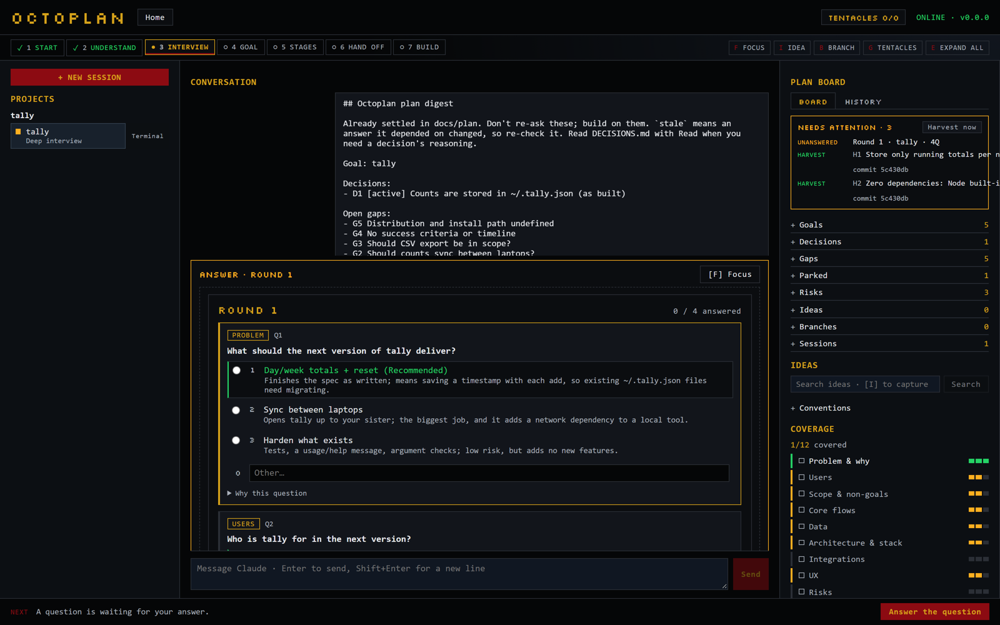
| Step | What happens | Done when |
|---|---|---|
| 1 Start | Pick a project, or make one (opens Home) | a project is open |
| 2 Understand | Imports only: check what Claude understood from your files | the import is applied (skipped for new projects) |
| 3 Interview | Claude asks question cards; you answer | every topic at least partly covered, or the goal is written |
| 4 Goal | Claude writes GOAL.md with a checkable definition of done | GOAL.md has done-when items |
| 5 Stages | The plan becomes step-by-step build prompts | stages exist |
| 6 Hand off | The plan becomes Octogent tentacles and to-dos | the handoff is applied |
| 7 Build | Octogent's agents work; you watch progress | every handed-off to-do is ticked |
Each step shows ✓ done, ● current, ○ still to come, or – skipped; hover one to see why. Steps never lock: click any step to look at it.
1 Start: a new idea, or something that exists
Octoplan opens on Home when you have no projects yet; the Home button, top left, brings you back any time. Your recent projects are listed underneath, including an import still waiting for review.
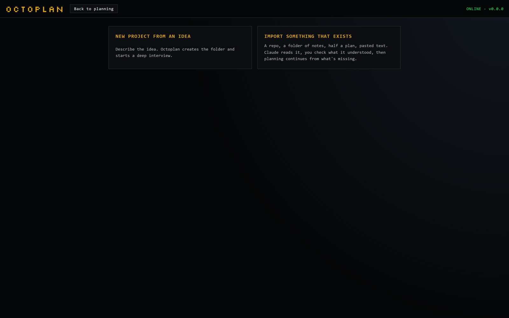
New project from an idea
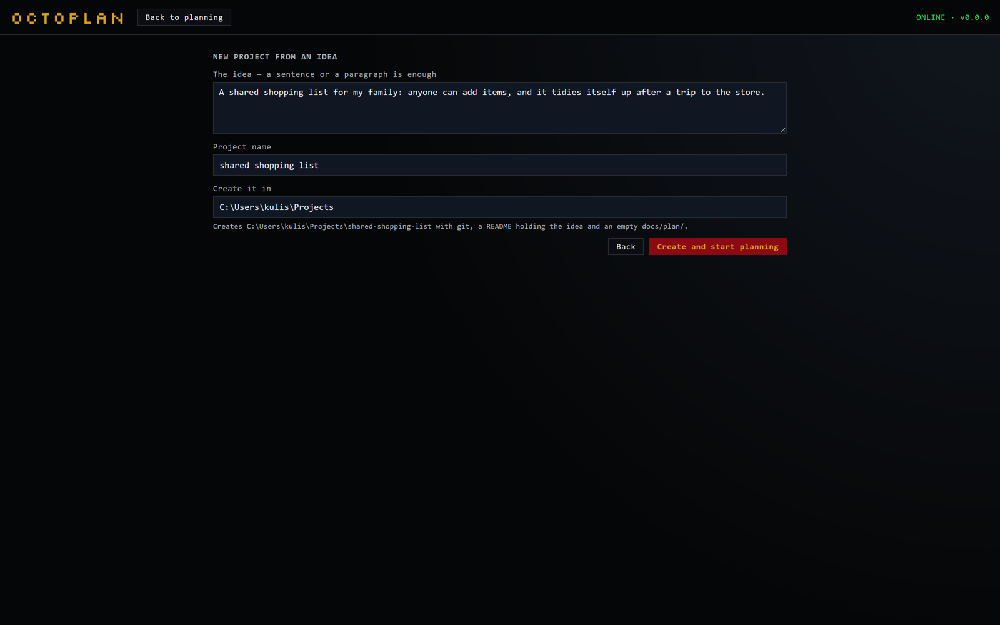
- Describe the idea. A sentence or a paragraph is enough.
- Project name is suggested from your idea. Any language works; a Hebrew name makes a Hebrew folder name.
- Create it in defaults to where your latest project lives.
- Press Create and start planning.
Octoplan creates the folder (it refuses a folder that exists and isn't empty), sets up git with a first commit, writes a README.md with your idea and an empty docs/plan/, and starts a Deep interview. The first question arrives within seconds.
Import something that exists
For a repo, a folder of notes, half a plan, a spec you can paste, a chat log.
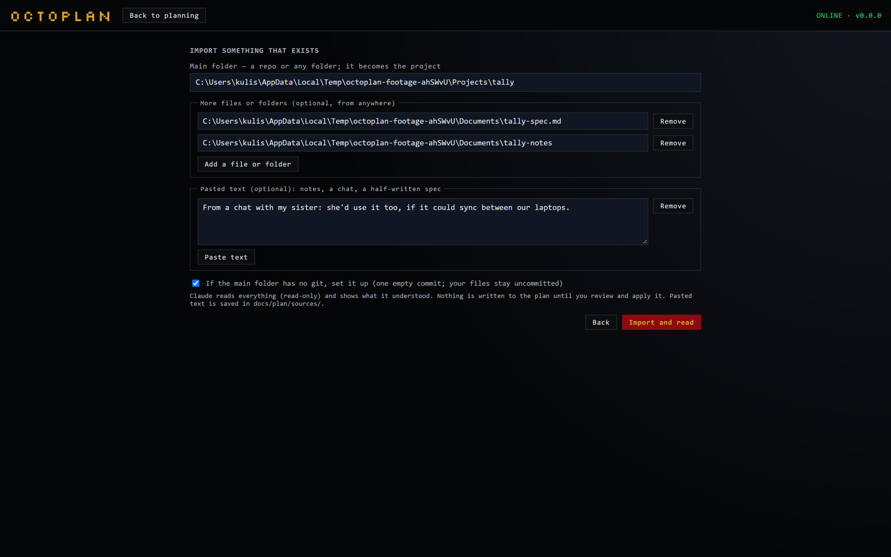
- Main folder: a repo or any folder. It becomes the project. Tip: in Windows Explorer, Shift+right-click → Copy as path; the quotes are removed for you.
- More files or folders, from anywhere. They're read, not copied.
- Pasted text. Each paste is saved as
docs/plan/sources/pasted-1.md,pasted-2.md… - Set up git (on by default): if the main folder has no git yet, Octoplan makes one empty commit. Your files are not committed.
- Press Import and read.
Claude reads plans and docs first (READMEs, .md, .txt, specs, PDFs), then manifests, and code only as needed. It never sees dependencies, build output, lockfiles or binaries. Word, PowerPoint, Excel files and images can't be read; they're listed as not read so you can paste their text. Big folders are capped at 400 listed files. The pass is read-only.
2 Understand: check what Claude read
While Claude reads (usually under a minute) the step shows a spinner. You can leave and come back; the draft is saved.
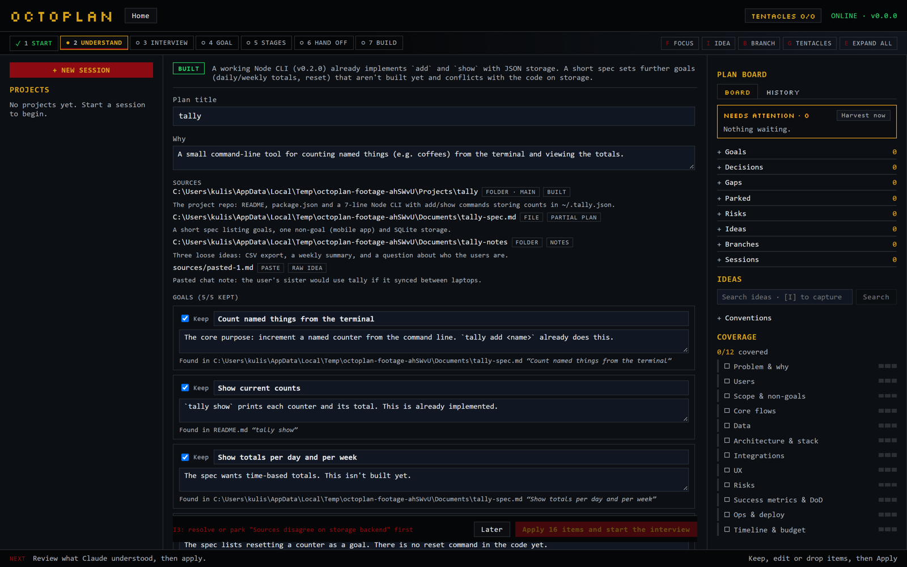
First comes a maturity verdict for the whole import and for each source. It decides how the interview starts: a detailed plan gets fewer questions, a built project is asked "what's next?".
- Raw ideaa sentence or a few lines
- Notesscattered thoughts
- Partial plansome decisions, big holes
- Detailed planmostly settled
- Builtworking code exists
Then the items Claude found, grouped into Goals, Non-goals, Decisions, Gaps and Risks. For each one you can keep it or untick to drop it, edit the title and details, and see its evidence: Found in file "exact quote", or Inferred: reason.
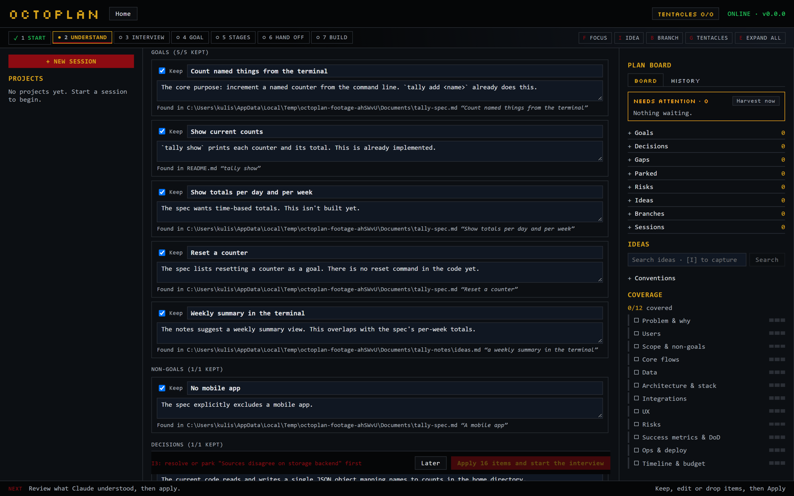
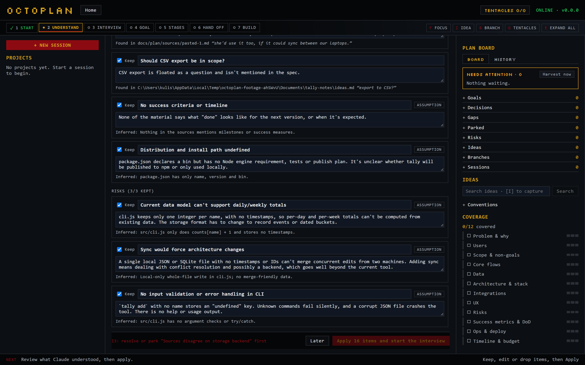
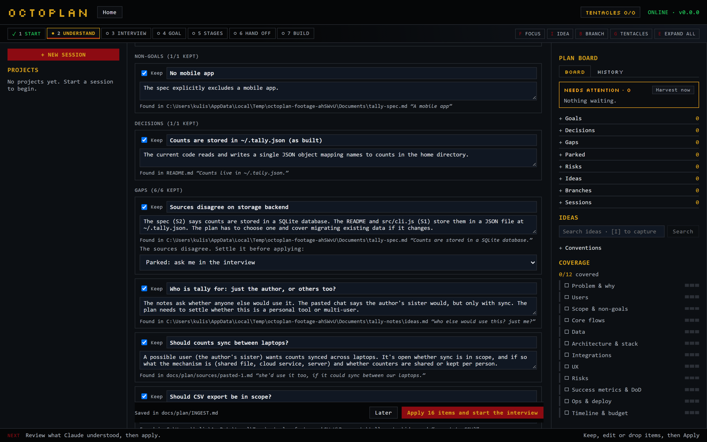
Items marked already in plan (D3) match something your plan has; they're shown and never written twice. Edits save automatically; Later closes the review. When ready, press Apply N items and start the interview: the kept items go into docs/plan/, and the interview asks only about what's still open. For a built project, the git history is also scanned for decisions. Importing again later shows only the new items.
3 Interview: answer question cards
Claude asks rounds of question cards in the answer dock, which never scrolls away.
| On a card | Does |
|---|---|
| 1–9 or click | Pick an option. (Recommended) is Claude's suggestion |
| O | Type your own answer in Other… |
| T | Tentative: you're unsure (also recorded as a risk) |
| P | Park it: decide later, with an assumption Claude can work with |
| Enter | Confirm the round |
| Why this question | Claude's reasoning |
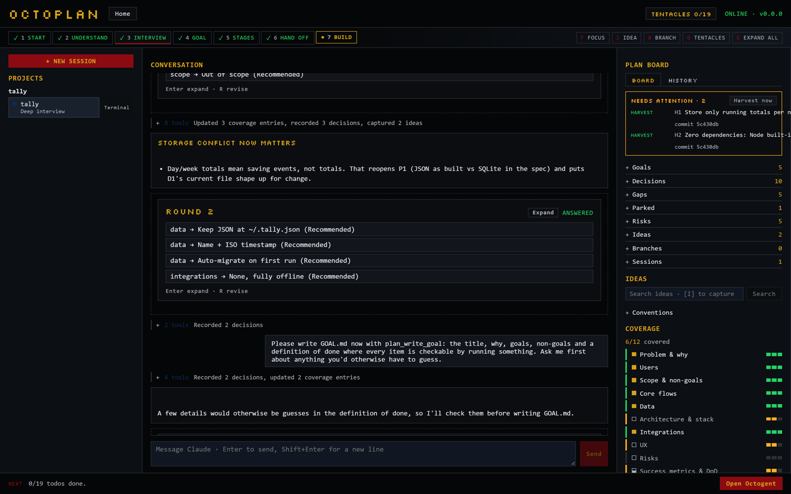
The plan board on the right collects Goals, Decisions, Gaps, Parked items, Risks and Ideas, plus Coverage: twelve planning topics that go from empty to partial to covered. Needs attention lists anything waiting for you. Press F for Focus mode, just the question, big and centered. You can also type to Claude any time in the box under the conversation.
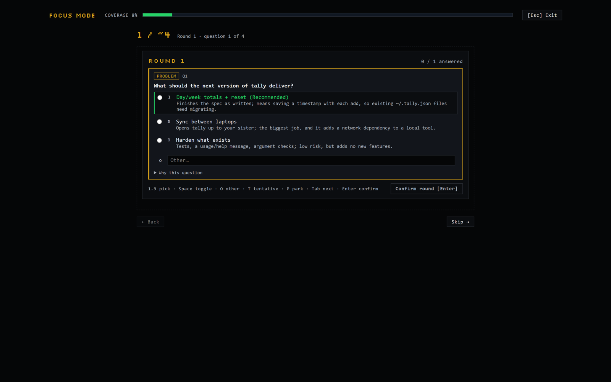
4 Goal: the definition of done
When the topics are covered, the next-action bar offers Ask Claude to write GOAL.md. Claude writes the title, why, goals, non-goals and a definition of done where every item can be checked by running something. It may ask one or two last questions first.
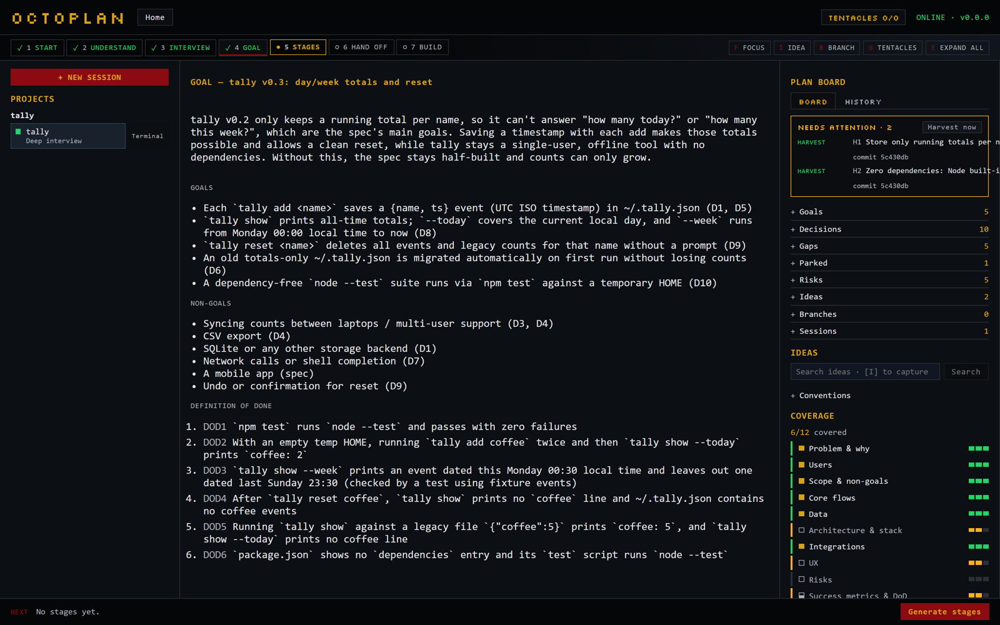
5 Stages: build prompts
Generate stages turns the goal and decisions into step-by-step build prompts, each self-contained and ending with a testing checkpoint. Copy prompt puts one on your clipboard for any Claude session.
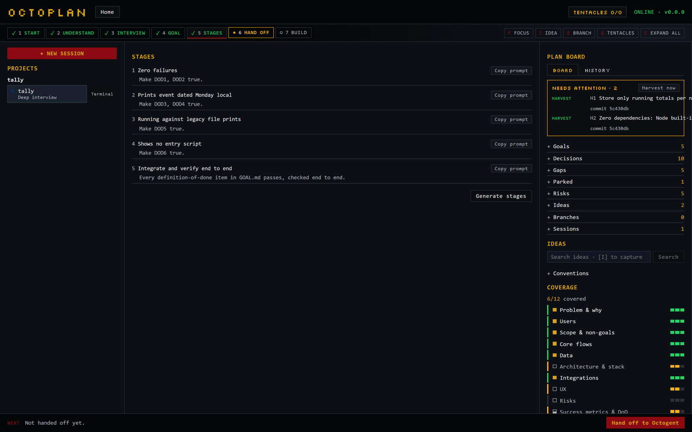
6 Hand off to Octogent
The plan becomes Octogent tentacles (workstreams) with to-do lists, in four steps.
- Generate. Claude proposes 3–8 tentacles, each owning certain folders, with one-line to-dos that end in "Done when…" and cite their decision (
[D12]). - Review. Rename, add or remove tentacles, change their folders, edit, move or delete to-dos. Saved to
docs/plan/HANDOFF.md. - Apply. Creates the missing tentacles and writes their to-dos. Applying twice never duplicates, and your own notes are never touched.
- Done. Results, Open Octogent, and the octopus prompt with a Copy button (also
docs/plan/OCTOPUS.md).
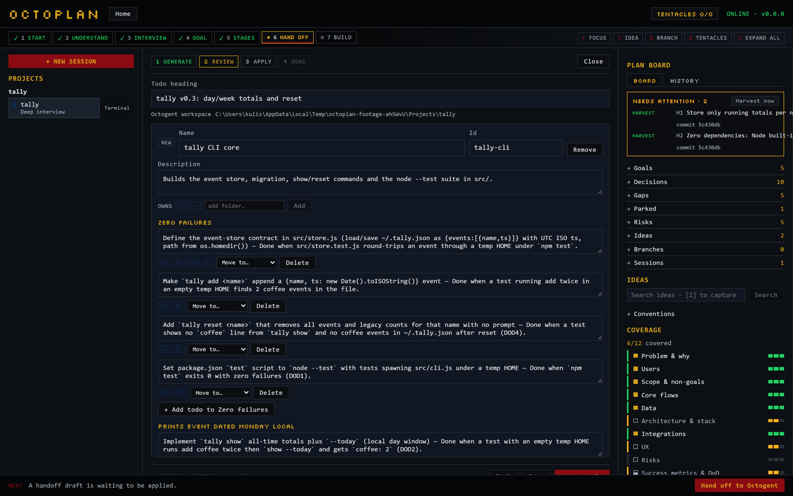
Octogent must be running in that folder for Apply to work. If it isn't, Octoplan says so and puts the fix right there: press Run Octogent, wait for Running :port, then Retry apply.
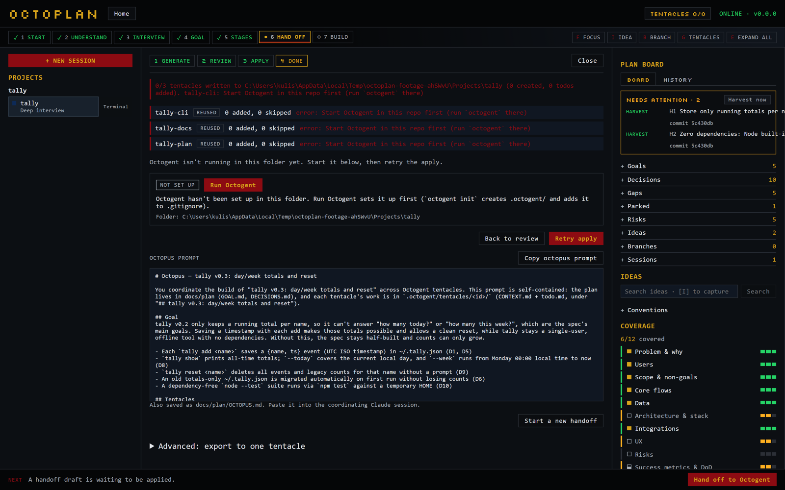
Advanced: "Export to one tentacle", under the wizard, writes chosen tasks into a single tentacle.
7 Build: Run Octogent
Run Octogent (in the Build step, the handoff, or the bottom bar) sets the folder up for Octogent if needed, opens a terminal window running octogent in your project, and waits for its real port. Then it shows Running :port and Open Octogent. If Octogent is already running, the button just opens it; it never starts a second copy. If no terminal can be opened, it shows the command with a Copy button.
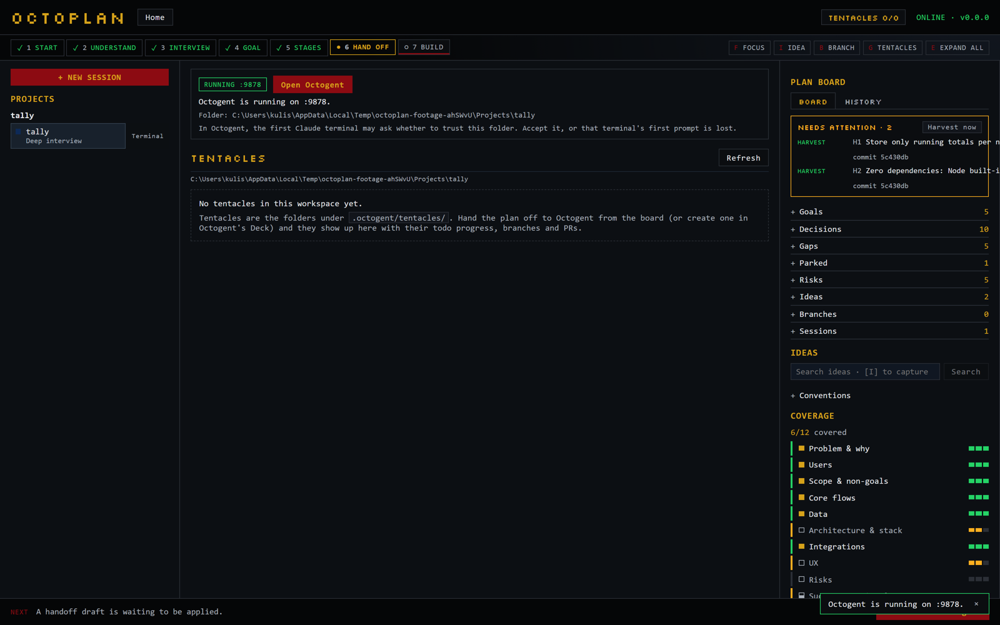
First time in a folder: the first Claude terminal in Octogent asks whether to trust this folder. Accept it, or that terminal's first prompt is lost.
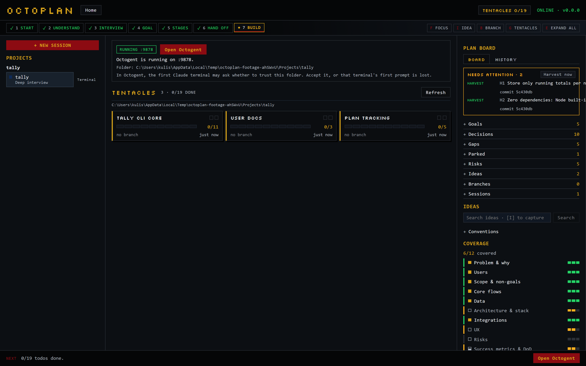
Inside Octogent
Octogent's views are numbered; press 1–8 to switch. [2] Deck shows one card per tentacle with its to-do list and progress, and buttons: Spawn starts an agent, Vault holds its files.
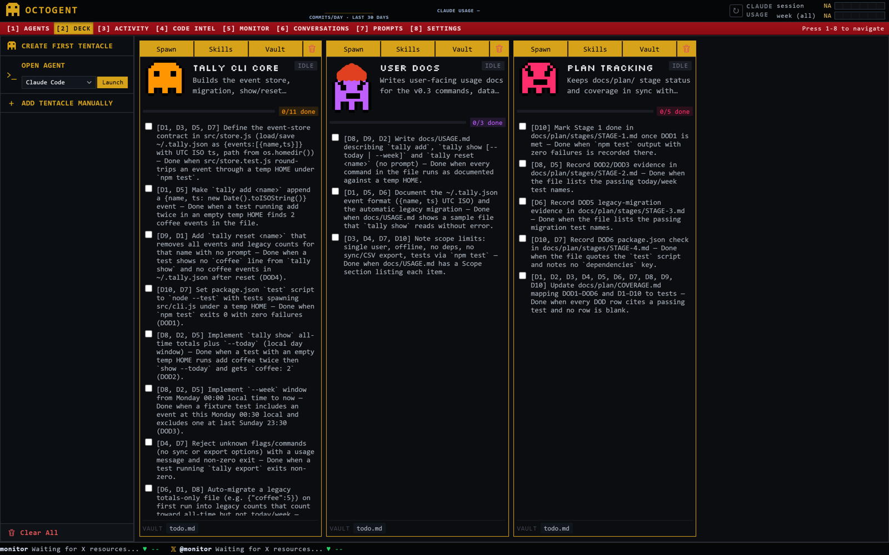
[1] Agents shows the octopus in the middle and the tentacles around it. Click a tentacle for its panel: Create Agent starts one agent, Spawn Swarm starts several for a long list.
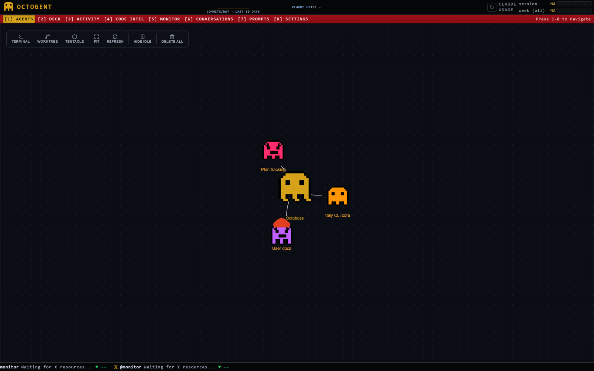
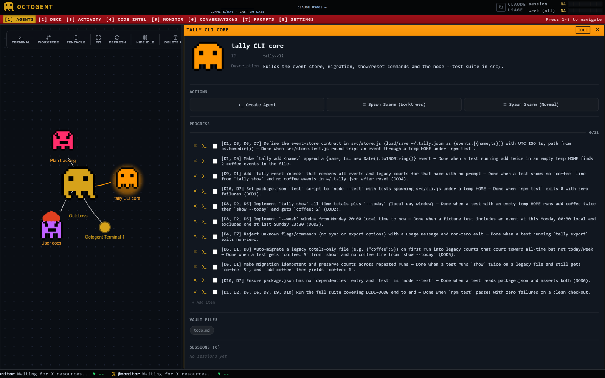
Start the work
- Open the octopus and paste the octopus prompt from Octoplan's Done step. It knows every tentacle, the order of the waves, and the rules: each agent stays in its own folders, and commits cite decision ids.
- The octopus spawns an agent per tentacle, or press Spawn / Create Agent yourself.
- Accept the folder-trust question the first time.
- Watch the to-dos tick off on the Deck, in Octoplan's Build step, and on the Tentacles n/m button in Octoplan's header.
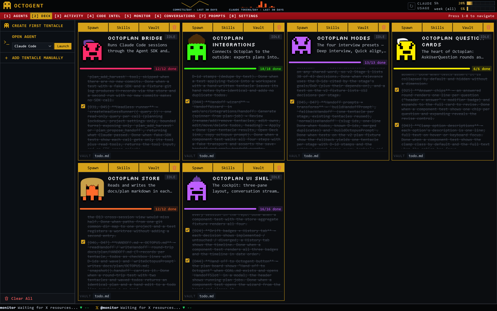
Closing the loop
Agents make decisions while they build. Octoplan catches them. Harvest reads new commits and to-do changes, automatically when you open the project or with Harvest now, and proposes decisions in Needs attention; rejected ones never come back. Drift badges show whether each decision is implemented, untouched or diverged. The board's History tab shows how the plan evolved.
Everything else in Octoplan
| Feature | How | For |
|---|---|---|
| Sessions & modes | + New session (sidebar) | Deep interview (thorough), Quick align (a few fast rounds), Brainstorm (ideas board), Devil's advocate (Claude pokes holes) |
| Idea capture | I | Jot an idea without leaving the conversation |
| Idea search | Board → Ideas → Search | Find ideas across all your projects |
| Brainstorm board | In a Brainstorm session | Star, park, kill, merge or adopt ideas; Converge turns starred ones into decisions |
| Branch | B | Fork the conversation to explore "what if" without losing the main line |
| Tentacles overview | G or Tentacles n/m | Tentacle cards with progress, branches and PRs; the git graph |
| Expand all | E | Unfold every summary, tool row and answered round |
| Conventions | Board → Conventions | Personal rules for every project (~/.octoplan/CONVENTIONS.md) |
| Terminal | Terminal, next to a session | Open that Claude session in a real terminal |
| Restarts | automatic | A question you hadn't answered comes back after a restart |
Every hotkey also has a button in the toolbar at the top right.
Where things are saved
Everything is plain markdown in your project: read it, edit it, commit it.
| File | What |
|---|---|
docs/plan/GOAL.md | Title, why, goals, non-goals, definition of done |
docs/plan/DECISIONS.md | Numbered decisions (D1, D2…) and where each came from |
GAPS.md · RISKS.md · PARKED.md | Open questions, risks (incl. tentative answers and assumptions), parked answers |
COVERAGE.md | The twelve planning topics |
IDEAS.md · branches.md | Ideas and conversation branches |
INGEST.md · sources/ | The import review, and your pasted text |
sessions/ | A log of every session's questions and answers |
stages/STAGE-n.md | Build prompts |
HANDOFF.md · OCTOPUS.md | The handoff plan and the octopus prompt |
HARVEST.md | Decisions found in commits, waiting for review |
.octogent/tentacles/<id>/ | Octogent: each tentacle's CONTEXT.md and todo.md |
Keyboard
| Where | Keys |
|---|---|
| Octoplan | F focus · I idea · B branch · G tentacles · E expand all · Esc close |
| Question card | 1–9 pick · Space toggle · O other · T tentative · P park · Tab next · Enter confirm |
| Octogent | 1 Agents · 2 Deck · 3 Activity · 4 Code intel · 5 Monitor · 6 Conversations · 7 Prompts · 8 Settings |
Troubleshooting
| You see | Do this |
|---|---|
| "The octogent CLI isn't on PATH" | In the octogent repo: pnpm install && pnpm build && npm install -g ., then Run Octogent again |
| Apply says "Start Octogent in this repo first" | Press Run Octogent, wait for Running, then Retry apply |
| "…process is alive, but :port isn't answering" | Check the Octogent terminal window: it may still be starting, or show an error |
| An agent's first prompt did nothing | It was waiting on the trust question. Accept it and send the prompt again |
| The import takes a while | Big folders take a couple of minutes. Close the review and come back; it's saved |
| "Resolve or park … first" | A Sources-disagree item is still open: choose Resolved or Parked, or untick it |
| A file shows as "Not read" | It's a Word, PowerPoint or Excel file or an image. Paste its text into a new import |
| I can't find my import | Home → Recent projects → the one marked "import waiting for review" |
| Octoplan says Offline | Run pnpm --filter @octogent/octoplan dev again; sessions come back |